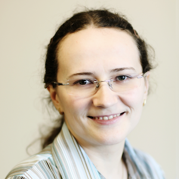

Transcription factors, DNA damage & mutagenesis
We investigate how transcription factors influence the formation and repair of DNA lesions—and how these interactions can promote localized mutagenesis.
Quantitative regulatory genomics · UMass Chan
We combine computation and experiment to uncover how protein–DNA interactions regulate genes, influence genome editing, and alter genome stability.
Mixed wet + dry lab
High-throughput biochemistryComputational modelingCell-based experimentsWhat we do
Our work connects molecular binding events to gene regulation, genome stability, disease, and evolution.
We investigate how transcription factors influence the formation and repair of DNA lesions—and how these interactions can promote localized mutagenesis.
We develop quantitative approaches to understand how human transcription factors are recruited to the genome and how genetic variants alter DNA binding.
We characterize the specificity of dCas9 and dCas12a complexes to help improve the precision of epigenome-editing strategies.
Why we do it
Transcription factors must find their targets among proteins involved in transcription, replication, DNA compaction, and repair. Understanding how they succeed—or interfere with these processes—is fundamental to explaining gene regulation and genome stability.
Our recent work reveals that transcription factors can bind damaged DNA and obstruct repair, increasing mutation rates at their binding sites.
How we do it
We move continuously between controlled experiments, predictive computation, and living systems.
Custom DNA arrays let us quantify protein binding across tens of thousands to nearly one million designed sequences.

Machine learning and genomic analysis transform quantitative measurements into predictions of binding, variant effects, damage, and repair.

Mutation-accumulation experiments and error-corrected sequencing test our mechanistic predictions in living systems.
Who we are
We bring together genomics, computational biology, genetics, computer science, molecular biology, and high-throughput experimentation.

Principal Investigator
Professor, Department of Genomics and Computational Biology
Raluca is an interdisciplinary scientist working at the intersection of computational biology, genomics, and quantitative protein–DNA biochemistry. She established the lab at Duke University in 2011 and moved it to UMass Chan in 2025.
Graduate student
Graduate student
Postdoctoral researcher
Research associate
Team roster shown as supplied for this first draft; roles and profiles will be confirmed before launch.
Selected publications
Zhu et al.
Horton et al.
Mielko et al.
Zhang et al.
Publication titles and links will be verified against the lab’s current bibliography before launch.
Join the lab
We welcome researchers who want to cross traditional boundaries between computation and experiment.
Start a conversation